Work in progress
Book version 0.1
Exploring and Denoising Your Data Set
Terence Parr and Jeremy Howard
Copyright © 2018 Terence Parr. All rights reserved.
Please don't replicate on web or redistribute in any way.
This book generated from markup+markdown+python+latex source with Bookish.
Please send comments, suggestions, or fixes to Terence.
“It is a capital mistake to theorize before one has data. Insensibly one begins to twist facts to suit theories, instead of theories to suit facts.” — Arthur Conan Doyle (1891) in A Scandal in Bohemia
In the last chapter, we successfully trained a random forest (RF) model to predict New York City rent prices but under ideal conditions: the data was already in a form acceptable to a model and was mostly free of errors, outliers, and other noise. The unfortunate reality is that real data sets are messy and so, in this chapter, we're going to learn how to process the original data from Kaggle bit-by-bit until it looks like that ideal data set. The dirty little secret of the machine learning world is that practitioners spend roughly 75% of their time acquiring, cleaning, and otherwise preparing data for training. (We won't learn about the acquisition piece in this book, but you can check out Terence's free Data Acquisition course.)
With any data set, the first task is to convert all nonnumeric features, such as strings and dates, into numbers because machine learning models only accept numbers. That's a big topic unto itself, which we'll address in [catvar]. In this chapter, we'll stick with the numeric fields (bathrooms, bedrooms, longitude, latitude) we used before. Once our data set is just a bunch of numbers, we can isolate the feature vectors (vectors of apartment attributes) and target values (prices) and train a model.
Don't expect awesome prediction results immediately, though, because training a model is always a highly-iterative process. Lower than expected prediction results force us to take another look at the data, looking for anomalies, errors, or contradictory information. {TODO: another example from jph?}. For example, in our apartment data, one place claims to have 2 bedrooms but 10 bathrooms, while some other apartments claim to be on the equator! Armed with graphs or statistics from the data set, we turn to someone with domain expertise to interpret what we observe. (Terence's sister lives in New York City and confirms that New York is not on the equator, though typically feels that way in August.)
Using domain expertise, we need to distinguish between worrisome data elements that need to be fixed and those that should, in fact, be part of the training. We also have to view all data cleaning operations through the lens of what exactly we want the model to do. In our case, we want a model that predicts apartment prices but just for New York City and just for the reasonably priced apartments. For example, in our data set, we have an outlier apartment that costs $4,490,000 (it must have parking) that sticks out like a sore thumb in the data. We're going to delete this record and a few other similar records for the simple reason that they exceed our focus on reasonably prices to serve the majority of the market. Besides, those outliers could skew our model or any statistics we compute on the data.
As an example of an error, we've already mentioned that some apartments have a latitude of 0, meaning the equator. This is likely a missing value rather than an error, but there are only a handful of these records out of 50,000 and so we'll delete these as well. (In [missing], we'll learn how to deal with missing feature values.) Data sets can also have training records that reduce model generality because the records are inaccurate or confusing in some way. There is an apartment in our data, for example, whose longitude and latitude place it in Boston. We'll nix this kind of stuff too.
It's not that such anomalies confuse specifically an RF model. The point is that a model can only learn what we tell it to learn, no matter how sophisticated the model. If we give our model garbage data like apartments that don't exist in New York City or that are far outside the price range of mere mortals, it's going to take those into consideration, which will affect its accuracy. We are literally training the model that the equator is part of New York City.
Some models do, however, get confused if we train them with superfluous, non-predictive features or train them with highly-correlated features (like country and country_code). Model accuracy can degrade significantly. As an extreme example, imagine adding a feature column consisting of random numbers to the training set or duplicating one of the existing feature columns. Such features can cause problems for some models, such as linear models. RFs, on the other hand, don't suffer from this issue. They inherently ignore non-predictive features and do not give added weight to repeated or highly-correlated features. ([RF] explains this bit of magic.) This is one of the big reasons we recommend RF models, for both beginners and experts alike. RFs sidestep lots of potential model pitfalls, reducing what we have to worry about during the training process.
We're going to begin this chapter with another recommendation, that you use Jupyter notebooks for all of your development work. We'll motivate their use by pointing out how machine learning programming is different than normal application development. Next, we're going to explore the original apartment data set, looking for and correcting suspicious records and elements. To do that, we'll learn a multitude of useful techniques to examine and manipulate Pandas data frames. Along the way, we'll also use matplotlib to generate some cool looking graphs. Once we've got a decent model based upon the cleaned up data, we'll try to improve accuracy by synthesizing (conjuring up) new apartment features from the existing features. We'll finish up by summarizing the model training process followed in this chapter.
Machine learning programming is challenging
1As you start to tackle your own machine learning problems, know that you're not alone when you get angry and frustrated. It's the nature of the beast to have difficulty wrangling large amounts of data, looking for suspected bugs, trying to beat libraries into submission, and so on. We're all in the same boat! Some of the mechanics get easier, but even experts find this kind of programming to be exasperating and extremely difficult to get right.
The ideas behind preparing data and training models are not that hard to understand. In fact, we're going to build up a broadly-applicable recipe as we proceed through the book. On the other hand, the physical act of programming to prepare data and train models can be extremely challenging and frustrating.1 The ease with which we trained our rent model in the last chapter is highly misleading. You might wonder how hard it can be when those code snippets were so small and straightforward, at least with a bit more experience with the libraries. (In practice, most machine learning programs are so small we should really call them scripts not programs.)
The difficulty lies in that we can't just bash our way to victory like we can when, for example, implementing a graphical interface. In that case, we can just pound on the code until the resulting GUI fits the intended design. Of course, designing a good GUI is often hard, but the act of GUI programming itself is more of a slugfest than an intellectual endeavor.
Machine learning programming is difficult for these inescapable reasons:
- Loading, processing, and training a model on large data sets can take hours or even days. That seriously impacts the highly-iterative nature of machine learning programming, which involves trying lots of little experiments. We need these experiments to run quickly so we can perform lots of them. In [bigdata], we'll look at ways to increase iteration speed, such as using a smaller but still representative data set.
- Even non-"big data" data is unwieldy. Only portions of even modestly-sized data frames are visible on the screen at once, which makes them hard to explore. Even if we can see all of a large two-dimensional matrix on the screen, incorrect values don't immediately pop out at us. That makes it difficult to find bugs, even when we know one exists. Sometimes we have to use tiny, toy data sets to verify each stage of our data processing.
- There is no definition of correct results. In other words, it can be hard to tell when we're done with the program. When building a normal application, bugs can show up as raised exceptions, incorrect GUI elements, or incorrect output. In the machine learning world, there is no definition of incorrect output. Imagine our model gets terrible results. It could be that there is simply no relationship to capture in the data, we have incorrectly prepared the data, we're using the wrong model, or we have a bug in the code.
Now imagine the opposite where we get terrific prediction results. We don't know whether that's because the data has an obvious pattern to capture and our program is bug free or because the program has a bug. For example, a common bug is to confuse the prediction accuracy of the model on the training set and the accuracy on the validation set. An overfit model can easily yield nearly perfect prediction results on the training set but abysmal accuracy on the validation set. Worse, we humans are prone to wish-fulfillment and confirmation bias. It's very tempting to stop when we see good results without confirming or verifying the model in some way.
The most insidious kind of bug is one that shows up as a slight reduction or improvement in model accuracy. These are particularly hard to find because it's so hard to get a whiff that such problems exist.
- {TODO: do we want something on math and statistics coming into play or even that we rely heavily on intuition}
Much of the frustration and trouble with building machine learning models stems from these reasons. To make the best of the situation, it's important that we take advantage of an important development environment called a “notebook” to improve our productivity.
Your machine learning development environment
Over the last 30 years, there's been remarkable progress in the development of IDEs that make programmers very efficient, such as Intellij, Eclipse, VisualStudio, etc... Their focus, however, is on creating and navigating large programs, the opposite of our small machine learning scripts. More importantly, those IDEs have little to no support for interactive programming, but that's exactly what we need to be effective in machine learning. While Terence and Jeremy are strong advocates of IDEs in general, IDEs are less useful in the special circumstances of machine learning.
2All of the code snippets you see in this book, even the ones to generate figures, can be found in the notebooks generated from this book.
Instead, we recommend Jupyter Notebooks, which are web-based documents with embedded code, akin to literate programming, that intersperses the generated output with the code.2 Notebooks are well-suited to both development and presentation. To access notebooks, we're going to use the recently-introduced Jupyter Lab because of its improved user interface. (It should be out of beta by the time you're reading this book.) Let's fire up a notebook to appreciate the difference between it and a traditional IDE.
First, let's make sure that we have the latest version of Jupyter Lab by running this from the Windows/Mac/Unix command line:
conda install -c conda-forge jupyterlab
The conda program is a packaging system like the usual Python pip tool, but has the advantage that it can also install non-Python files (like C/Fortran code often used by scientific packages for performance reasons.) The documentation also recommends running the following command (perhaps until it is standard equipment with the Anaconda).
jupyter serverextension enable --py jupyterlab --sys-prefix
Before launching, it's a good idea to create and jump into a directory where you can keep all of your work for this book. For example, you might do something like this sequence of commands (or the equivalent with your operating system GUI):
cd /Users/YOURID
mkdir mlbook
cd mlbook
mkdir src
cd src
mkdir data
On Windows, your user directory will be C:\Users\YOURID.
To launch the local Jupyter web server that provides the interface, run jupyter lab from the command line:
$ jupyter lab
[I 11:27:00.606 LabApp] [jupyter_nbextensions_configurator] enabled 0.2.8
[I 11:27:00.613 LabApp] JupyterLab beta preview extension loaded from /Users/parrt/anaconda3/lib/python3.6/site-packages/jupyterlab
[I 11:27:00.613 LabApp] JupyterLab application directory is /Users/parrt/anaconda3/share/jupyter/lab
[W 11:27:00.616 LabApp] JupyterLab server extension not enabled, manually loading...
...

Figure 1. Initial Jupyter Lab screen

Figure 2. Jupyter Lab after creating Python 3 notebook
Running that command should also open a browser window that looks like Figure 1. That notebook communicates with the Jupyter Lab server via good old http, the web protocol. Clicking on the “Python 3” icon under the “Notebook” category, will create and open a new notebook window that looks like Figure 2. Cut-and-paste the following code into the empty notebook cell, replacing the data file name as appropriate for your set up (here we've copied and unzipped the data/rent-ideal.csv.zip file into the data directory under src we just created above).
import pandas as pd
df = pd.read_csv("data/rent-ideal.csv")
df.head(5) # print the first 5 rows of data
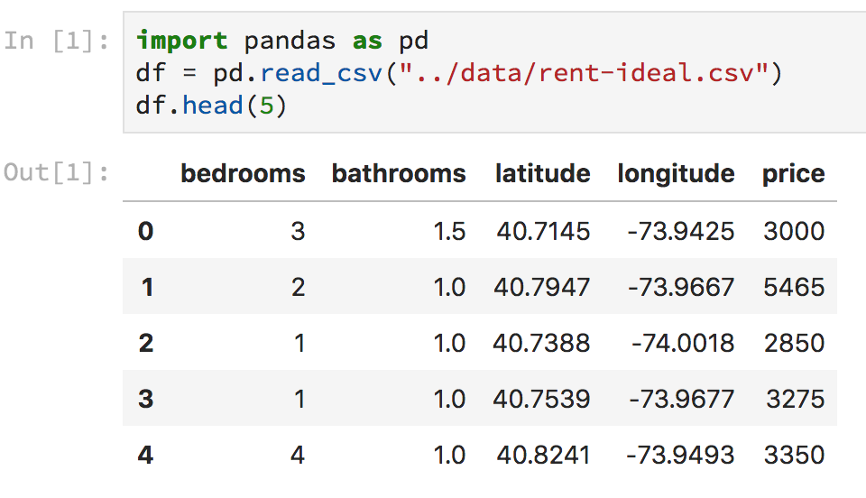
Figure 3. Jupyter Lab with one code cell
After pasting, hit control-enter in the cell (hold the control key and then hit enter), which will execute and display results like Figure 3. Of course, this would also work from the usual interactive Python shell, but it's not as pretty:
$ python
Python 3.6.3 |Anaconda custom (64-bit)| (default, Oct 6 2017, 12:04:38)
[GCC 4.2.1 Compatible Clang 4.0.1 (tags/RELEASE_401/final)] on darwin
Type "help", "copyright", "credits" or "license" for more information.
>>> import pandas as pd
>>> df = pd.read_csv("../data/rent-ideal.csv")
>>> print(df.head(5))
bedrooms bathrooms latitude longitude price
0 3 1.5 40.7145 -73.9425 3000
1 2 1.0 40.7947 -73.9667 5465
2 1 1.0 40.7388 -74.0018 2850
3 1 1.0 40.7539 -73.9677 3275
4 4 1.0 40.8241 -73.9493 3350
>>>
We could also save that code snippet into a file called dump.py and run it, either from within a Python development environment like PyCharm or from the command line:
$ python dump.py
bedrooms bathrooms latitude longitude price
0 3 1.5 40.7145 -73.9425 3000
1 2 1.0 40.7947 -73.9667 5465
2 1 1.0 40.7388 -74.0018 2850
3 1 1.0 40.7539 -73.9677 3275
4 4 1.0 40.8241 -73.9493 3350
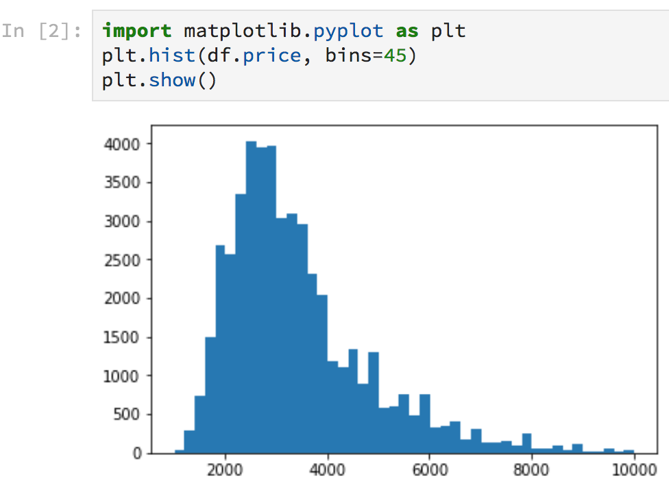
Figure 4. Notebook with graph output
Notebooks have two big advantages over the interactive Python shell. Because the Python shell is using an old-school terminal, it has very limited display options whereas notebooks can embed graphs and other images directly. Figure 4 illustrates how to generate a histogram of rent prices that appears inline right after the code. Click the “+” button on the tab of the notebook to get a new cell, paste in the following code, then hit control-enter.
import matplotlib.pyplot as plt
plt.hist(df.price, bins=45)
plt.show()
The Python shell also has the disadvantage that all of the code we type disappears when the shell exits. Notebooks also execute code through Python shells (running within Jupyter Lab's web server), but the notebooks themselves are stored as .ipynb files on the disk. Killing the Python process associated with a notebook does not affect or delete the notebook file. Not only that, when you restart the notebook, all of the output captured during the last run is cached in the notebook file and immediately shown upon Jupyter Lab start up.
Programming with traditional Python .py files means we don't lose our work when Python exits, but we lose interactive programming. Because of its iterative nature, creating and testing machine learning models rely heavily on interactive programming in order to perform lots of little experiments. If loading the data alone takes, say, 5 minutes, we can't restart the entire program for every experiment. We need the ability to iterate quickly. Using a Python debugger from within an IDE does let us examine the results of each step of a program, but the programming part is not interactive; we have to restart the entire program after making changes.
So notebooks combine the important interactive nature of the Python shell with the persistence of files. Because notebooks keep graphics and other output within the document containing the code, it's very easy to see what a program is doing. That's particularly useful for presenting results or continuing someone else's work. You're free to use whatever development environment you find comfortable, of course, but we strongly recommend Jupyter notebooks. If you follow this recommendation, it's a good idea to go through some of the Jupyter tutorials and videos out there to get familiar with your tools.
How to start a machine learning project
The first step in any machine learning project has nothing to do with programming. We start by making sure we're solving the right problem. As with any software project, the client often doesn't know exactly what they want or can't articulate what they want very well. Next, we need to figure out if we have the right data and, if not, how or where we can get the data. There could be multiple data sources to merge and the data might appear in multiple formats, such as Excel(tm), XML, JSON, or CSV (comma-separated values). Talking to the client and acquiring the right data in the right form is an important part of any project but beyond the scope of this book. For our purposes, we'll assume the data sets we use emerged from such process.
To begin the actual programming phase of a machine learning project, the first step is to look at the data, but just for a quick sniff (using a Jupyter notebook, Excel, editor, etc...). We need to know what the data looks like, but we have to be careful not to make too many assumptions. For example, our first inspection of the data should yield the column names, their datatypes, and whether the target column has numeric values or categories. (If we're predicting, those values must be numeric; if we're classifying, those values must be categories.)
The more you look at the data the more you risk overfitting. {TODO: ask jph for something specific}
Try to avoid looking too much at the data values because it's tempting to start making judgments and assumptions based on eyeballing the data rather than using a machine learning model. Remember that we wouldn't need machine learning if a human could just look at a big data set and make correct, unbiased predictions. For example, if we see a column with lots of missing values, it's tempting to remove that from consideration as a feature. Instead, let the model tell you what features are important. We might also, erroneously, choose a model that looks like it would work well based upon overzealous examination of the data.
Never train or tune a model using the test set; use the validation set.
The second step of the programming process is to extract a test set from the training data set, unless the client provides you with a specific test set. The test set should be hidden away where neither we nor the model can peek at the data. In other words, we never train or tune the model using the test set. If we did use the test set before completing the model, it'd be just another validation set. Recall from the last chapter the difference between the training set and the validation set. We train the model on the training set and check the generality of the model by comparing its predictions on the validation set against the known correct answers contained in the validation set. We tune the model using hyper-parameters, watching the effect on the validation error, hoping to improve accuracy. (More on validation below.) After constructing what we think is a good model, we can use the test set to get an estimate of the model's generality, that is, how well the model will perform on other previously-unseen data.
Let's see what our first two steps look like in practice on the apartment data.
Getting a quick sniff of the data
The apartment data we've been using was derived from a Kaggle competition called Two Sigma Connect: Rental Listing Inquiries and was given in JSON form, but we have converted it to CSV for the purposes of this chapter; see zipped book data file rent.csv.zip.
To get started, let's create a new Jupyter notebook by clicking on the “+” button again and selecting “Python 3” under the “Notebook” tab. This will create a file in the same directory where you started jupyter lab (unless you have jumped around using the “Files” tab on the left side of the lab browser window). It's probably a good idea to give the file a decent name like prep.ipynb by right clicking on the notebook tab that currently says “Untitled.ipynb.” Now, let's enter some code into the notebook to read in the CSV data using Pandas to get our first look at the original data:
import pandas as pd
df = pd.read_csv("data/rent.csv")
print(df.shape) # print rows, columns
df.head(2) # dump first 2 rows
(49352, 15)
There are many columns and some of them are very wide, so let's transpose the display so that the columns are vertical (.T performs a transpose on the data frame, flipping rows and columns):
df.head(2).T
This makes it easier to see the column names, column datatypes, and a sample data value for each column. We see a bunch of nonnumeric fields, including some columns that actually look like lists of things packed together into a single string, such as photos and features. The description seems to be free text in a string. Pandas can tell us more specifically about the data types if we ask for info():
df.info()
<class 'pandas.core.frame.DataFrame'>
RangeIndex: 49352 entries, 0 to 49351
Data columns (total 15 columns):
bathrooms 49352 non-null float64
bedrooms 49352 non-null int64
building_id 49352 non-null object
created 49352 non-null object
description 47906 non-null object
display_address 49217 non-null object
features 49352 non-null object
interest_level 49352 non-null object
latitude 49352 non-null float64
listing_id 49352 non-null int64
longitude 49352 non-null float64
manager_id 49352 non-null object
photos 49352 non-null object
price 49352 non-null int64
street_address 49342 non-null object
dtypes: float64(3), int64(3), object(9)
memory usage: 5.6+ MB
The datatypes are in the last column, such as float64 which means “floating-point number using 64-bits (8 bytes) of memory”. The object data type is Pandas' equivalent of a string datatype. Anything other than float and int are nonnumeric datatypes. Because we don't know how to deal with nonnumeric datatypes at this point, we can just drop those columns. All we care about are the numeric fields from the last chapter: bathrooms, bedrooms, longitude, latitude, price.
To get a subset of the data frame, we could drop columns from df, but it's more explicit to grab a subset of the columns by indexing with a list of column names:
df_num = df[['bathrooms', 'bedrooms', 'longitude', 'latitude', 'price']]
df_num.head(2)
Indexing on a data frame expects a column name or list of column names, so df['price'] gets just the price column. Because Python list literals use square brackets, ['bathrooms',...], just like indexing, the double-bracket set timer for 20notation looks a little funny.
Data frame df_num acts like a copy of df with just those five columns but df_num is actually a view or slice of df restricted to five columns. This becomes important later when we try to alter data frame views because we get an error if we alter a view instead of a full data frame.
At this point, we've got the data looking very similar to what we had in rent-idea.csv from the last chapter. But, this time, we're going to extract a test set before training our model.
Extracting a test set
The true test of model generality is the performance of the model on a test data set not used for training or tuning of model hyper-parameters. It's often the case that we need to create our own test set and, unfortunately, it's not as easy as just extracting a random 10% of the records in practice. Even if there is no date or other time-related column, data is collected over time, which can skew data. For example, users added to a social media website recently are often quite different from users added much earlier. (Early adopters tend to be younger and so new users to a social media site will skew older as time goes on.) In our apartment data, prices could be skewed because of inflation or the introduction of a new subway station near a cluster of apartments. Worse, some data sets are very unbalanced, such as fraud records within credit card activity data. The number of fraud records is vastly smaller then the number of valid credit card records, which also has a strong impact on training. We'll look at this in more detail in [testing], but these issues are good to keep in mind. {TODO: need jph review, augmentation}
5This code snippet illustrates why we used two different names, df and df_num, for different views of the data frame around. The notebook code snippets are all sitting in the global Python scope; all of those variables are globals so we need different names to keep them separate.
For now, we're going to just randomly select 15% of the apartment records to hold out as our test set. Fortunately, such a simple test set selection process will work out fine for this data set. The date range of records is very tight, just three months:5
df.created.min(), df.created.max()
('2016-04-01 22:12:41', '2016-06-29 21:41:47')
(df.created is the same as df['created'], except on the left-hand-side of an assignment, and grabs an entire column of data from a data frame; Pandas calls these series.)
Or course, we've no idea whether a new subway station popped into existence or New York City added an apartment tax during that timeframe. If we later discovered that our model was performing poorly, this is the kind of real-world anomaly or discontinuity we'd have to look for.
To extract a randomly-selected subset of a data frame, scikit function train_test_split() works well. Here's how to split df_num into df_train containing 85% of the data and df_test with the other 15%, using a Python tuple assignment statement, where there is a list of variables on the left-hand-side of an assignment:
from sklearn.model_selection import train_test_split
df_train, df_test = train_test_split(df_num, test_size=0.15) # 15% goes into test set
It's a good idea to save the training and test sets to separate CSV files in case we need to reload them. Having consistent data sets means we can reproduce issues, error metrics, and so on across machines and restarts of Jupyter Lab.
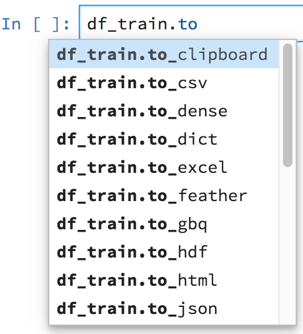
Figure 5. Jupyter notebook auto-completion; hit tab key
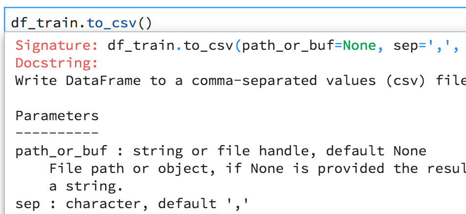
Figure 6. Jupyter notebook function argument doc; hit shift-tab inside parentheses
Pandas data frames have lots of methods and so it's a good idea to get used to using auto completion. Type a few letters of the function name then hit the tab key. Figure 5 shows that there is a to_csv() function available. Once we have the name of a function, we can use shift-tab within the parentheses of a function call itself to get the documentation for that function, as shown in Figure 6. Execute the following code to save both data sets.
df_train.to_csv("data/rent-train.csv")
df_test.to_csv("data/rent-test.csv")
A simple pd.read_csv("data/rent-test.csv") will read the test set back anytime we need it.
Now that the test set is saved on the disk, let's forget it even exists until we think we have a decent model. It's a bad idea to even look at the test set because that glimpse can bias how we tune the model or even affect which model we choose. To correctly test generality, the test set can in no way affect model development. Given a data set, if you try enough models, you'll eventually find one that finds a relationship between features and target, even if one does not exist!
With the data sets prepared, it's time to give it the old smoke test and see what happens when we shove our training data into an RF model.
Training an initial model
6The cool kids say things like, “there's no signal there” to indicate no relationship exists between features and target.
We haven't looked at the training data very intensely other than to know all of the columns in the data frame are numeric. We could explore the data some more, but what exactly would we be looking for? There would be an awful temptation to prematurely manipulate the data based upon our flawed human observations. Instead, let's train and test a model, letting the model tell us whether there is a relationship between the features and the target and how strong that “signal” is.6
Here's the recipe for training a model once we have a properly-prepared data frame, df_train, that consists only of numeric or boolean columns:
- Separate the features and target columns.
X_train = df_train[['bedrooms','bathrooms','latitude','longitude']]
y_train = df_train['price']
- Create an appropriate model with suitable hyper-parameters, if any.
from sklearn.ensemble import RandomForestRegressor
rf = RandomForestRegressor(n_estimators=100, n_jobs=-1)
- Tell the model to fit the training data.
rf.fit(X_train, y_train)
We've trained an RF predictor model. Are we done? Unfortunately, this is just the beginning. We have no idea what the prediction accuracy of this model is. Until we know something about the model's generality, we've got more work to do. Metrics we compute about model performance will, conveniently, also tell us something about the data set.
Estimating prediction error
There are two kinds of errors we can compute from a model that we use prior to final test set evaluation: the training error and the validation error. The training error compares the predictions made by a model given the data it trained on to the known correct target values (also found in that training data). The validation error compares the predictions made by the model given the validation data to the known correct target values from the validation set. In other words, if x is a feature vector from the training set (X_train) and y is the target (known correct response in y_train), the training error compares the model's prediction for x with y. The overall training error is the average or some other metric computed on such differences for each x in the training set. The validation error computes the same metric but using x and y pairs from the validation set.
The simplest error metric is likely the average difference between predicted and actual prices, called the residuals, which we can get with scikit's mean_absolute_error() function (“mean” is the same thing as “average”):
from sklearn.metrics import mean_absolute_error
pred_train = rf.predict(X_train)
err_train = mean_absolute_error(y_train, pred_train)
print(f"${err_train:.2f} average error on training set")
avg_train = y_train.mean()
perc_err_train = err_train*100/avg_train
print(f"{perc_err_train:0.2f}% of average {avg_train:.2f}")
$300.88 average error on training set
7.80% of average 3856.11
Function mean_absolute_error() is just subtracting predicted minus known target values, taking the absolute value, and then computing the average:
y_diff = abs( rf.predict(X_train) - y_train )
err_train = y_diff.mean()
{TODO: compare MAE to the median as a baseline model?}
Function call rf.predict(X_train) returns a vector of predictions so rf.predict(X_train) - y_train does a vector subtraction, yielding a new vector containing the element-wise subtraction of the two vectors. Calling abs() on that resulting vector applies absolute value to every element of the vector, yielding the y_diff vector result. These so-called vector operations tend to be much more efficient than Python loops, because the vector operations are done in highly-optimized C code under the hood within the Python libraries.
That training error tells us that, on average, the model is able to reproduce the data it was trained on to within $300. That's about 7% of the average rent price. (This error value will fluctuate with every new call to train_test_split().)
That error metric sounds pretty good, but unfortunately a decent training error is utterly meaningless. All it means is that the model is acting kind of like a dictionary, memorizing the training data. We don't even need machine learning to get that sort of behavior. On the other hand, if the training error is very bad, that does tell us something: as provided to the model, there's no signal in the data or the model is too weak to capture it. If we can't futz with the features and get a low training error, there's no point in proceeding because such a model will never generalize. In other words, if a model performs poorly on the data it was trained on, the model will never perform well on data it is never seen. Our training error of $300 is good but all we can conclude is that there is a possible relationship between features and target that an RF model can capture.
Models that perform poorly on training data will never generalize well to data they have never seen. Models that perform well on training data might or might not generalize well.
The only thing that matters when building a model is generalization, which we measure with validation error and then, ultimately, with the test error computed using the test set. The validation error is an estimate of the true prediction error, but it is an underestimate because we use the validation set during training to tune the model. The test set we held out will give the best estimation of the true prediction error, the model's generality.
As we did with the test set, we could have held out a validation set, but the validation error associated with a single validation set could fluctuate, sometimes dramatically, from run to run. For example, imagine that the held-out validation set happens to include lots of really expensive apartments. In that case, the validation error would be misleadingly high because the model was trained on a data set with different characteristics.
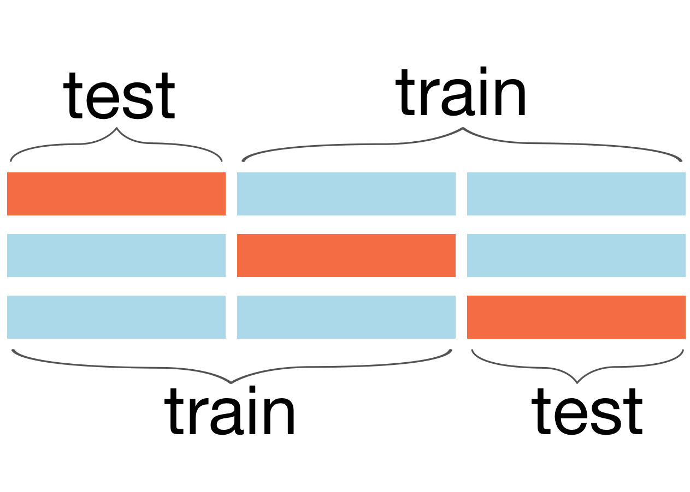
Figure 7. Illustration of 3-fold cross validation training on two (blue) chunks, testing on the third (orange) until the model computes an accuracy metric for all three chunks8The neg_mean_absolute_error is negated because of a convention in scikit that higher values are better scores than lower and so mean absolute error is flipped so that larger errors yield smaller numbers.
We can get a more stable validation error and, hence, more reliable estimate of the prediction error, using k-fold cross validation, which computes and averages k validation errors. The idea is to split the training set into k chunks and compute the validation error on one chunk using a model trained on the other chunks, as shown in Figure 7 for k=3. Do that for each of k chunks and we have k validation errors. The overall validation error is the average of the k chunks' validation errors. Scikit provides a function called cross_val_score() to handle all of this for us:8
from sklearn.model_selection import cross_val_score
k = 5
cvscore = cross_val_score(
RandomForestRegressor(n_estimators=100, n_jobs=-1), # which model to use
X_train, y_train, # what training data to split up
cv=k, # number of folds/chunks
scoring='neg_mean_absolute_error') # what error metric
chunks_valid = -cvscore
print(chunks_valid)
[544.44954178 392.68976308 428.08027412 999.7682175 472.52607073]
For k=5, we get 5 chunk validation errors, which we average to get an overall validation error:
avg_err_valid = chunks_valid.mean()
print(f"{avg_err_valid:.2f} average error on validation set")
567.50 average error on validation set
But the average value hides a great deal of variability in the chunk validation errors, which shows up as instability in the overall average error across runs. For example, running the cross validation again three more times gives:
566.40 average error on validation set
562.80 average error on validation set
563.65 average error on validation set
We can visualize the variability between chunk validation errors with a tiny bit of matplotlib code, plotting the chunk number against the chunk validation error:
» Graph generated by code to left
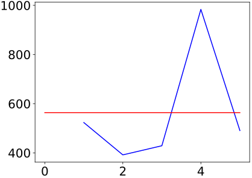
plt.plot(range(1,k+1), chunks_valid, color='blue')
# plot raw line at average
plt.plot([0,k],[avg_err_valid,avg_err_valid], color='red')
plt.show()
Using a consistent color palette
A common mistake we see among our students is to use essentially random colors or at least inconsistent colors across graphs. In one graph, feature price is purple and in the next graph the same feature is green. Humans are very sensitive to color and attach meaning to the various colors subconsciously, so it's important to be consistent across visualizations. When drawing diagrams manually, it's a good idea to choose from a consistent color palette as well. For this book, we selected as our palette and choose from those colors when drawing diagrams. Python code used in the remainder of the book will select colors from this pallet using a simple dictionary mechanism:
bookcolors = {
'crimson': '#a50026', 'red': '#d73027', 'redorange': '#f46d43',
'orange': '#fdae61', 'yellow': '#fee090', 'sky': '#e0f3f8',
'babyblue': '#abd9e9', 'lightblue': '#74add1', 'blue': '#4575b4',
'purple': '#313695'
}
We will look up our shade of blue using bookcolors['blue'] rather than relying on whatever the default blue color is for matplotlib.
The color palette you choose should also be accessible to those with forms of colorblindness and make sure the contrast between text and its background is high enough contrast for the visually impaired. Chrome's Accessibility Developer Tools run an excellent audit for you. A nice site for selecting color pallets is colorbrewer2.org; make sure to check the “colorblind safe” box so it only shows you colorblind safe pallets. When you do draw a diagram, you can also check what it looks like to colorblind individuals by uploading that image to vischeck.
The red line in the generated graph shows the average value, which we're using to estimate the overall validation error. To the human eye, that doesn't look like a very good estimate. The problem is that we are trying to summarize a bunch of numbers with just one number. In addition to computing the average error, we need a way to capture how much those chunk validation errors bounce around the overall average error.
Enter the standard deviation, which measures the average deviation in a set of numbers from the average of those numbers. We'll learn more about measuring variability in [testing], but for now let's ignore the details and use NumPy to compute this metric for us:
chunks_valid = -cvscore # reverse neg of neg_mean_absolute_error
avg_err_valid = chunks_valid.mean() # compute the average chunk error
std_err_valid = chunks_valid.std() # compute standard deviation of chunk errors
print(f"${int(avg_err_valid)} average error +/-${int(std_err_valid)}")
$563 average error +/-$214
9To satisfy the statisticians, note that this rule assumes the data values follow a normal distribution, the “bell curve.” In this case, the distribution of our cross validation averages will always be a bell curve per the central limit theorem.
The easiest way to interpret the +/-$214 range of one standard deviation is with the 68-95-99.7 rule. One standard deviation covers 68% of the values. Two standard deviations covers 95% and three standard deviations covers 99.7%, or virtually all of the values. In other words, the standard deviation of our chunk validation errors is $214 so 68% of all validation errors are within $214 of the average validation error. 95% of the chunk validation errors would be within $428 of the average error. 99.7% of the validation errors would be within $644 of the average error.9
If the k-fold cross validation error standard deviation is high, it's suggestive of outliers in the target variable.
The average error of $563 is not horrible but a standard deviations of $214 indicates wide variance in the chunk errors, which is a problem. Because we tune models by tweaking hyper-parameters and watching the effect on the validation error, we need a very stable validation error. Otherwise, we wouldn't know whether a change in the validation error was due to an improvement in the model or natural variation.
If a chunk from our training data yields a very different validation error, that implies that the chunk has at least some data that is very different from what's in the other chunks. In other words, the data is very noisy, has errors, or has outliers. That means our next step is to dive into the data, looking for anomalies that we can hammer out to reduce variability in the validation errors.
Exploring and denoising the apartment rent data
As we've mentioned, we want to avoid doing excessive snooping around in the data because it's tempting to start making judgments that negatively impact the generality of our model. But, in this case, the unstable validation error is a legitimate reason. The general concept of snooping around is called exploratory data analysis (EDA). We're going to explore the data with the explicit purpose of finding anomalies. The focus of our model is on typically-priced apartments and only within New York City proper, which means we're going to look for extreme values outside of these ranges.
Take care that you decide what these bounds are before looking at the data. Don't look at the data first and then decide on a definition of anomalous. You risk removing or altering data simply because it looks inconvenient or looks like it might confuse the model. For the apartment data, it's safe to say that an apartment for less than $1,000 in New York City is probably missing some key elements like windows and doors, so that should be our lowest price. At the high-end, let's call $10,000 outside the range of “reasonably priced.”
With those bounds established, let's take get a high-level look at the complete data set, using full df_num not both df_train and df_test to avoid duplicating work on training and validation sets. Here's how to get some basic statistics:
df_num.describe()
A number of anomalies pop out from the minimum and maximum for each column. There's a place with 10 bathrooms and another with 8 bedrooms. There is a reference to longitude 0, which is the prime meridian (Greenwich, England), and a reference to latitude zero, the equator. Oh, and let's not forget the apartment that costs $4,490,000 per month or the intriguing place that costs $43 per month (probably an abandoned vehicle or an apartment that is currently on fire).
Examining the data distributions
Before we start slashing and burning the data set, let's look more closely at the distribution of the data. The distribution of a feature is a term that, loosely speaking, describes how the values of that feature are spread across the range of that feature. There are number of ways we can look at the distribution, such as sorting in reverse order and looking at the top 10 price values:
df_num.price.sort_values(ascending=False).head(10)
19558 4490000
9590 1150000
30689 1070000
29665 1070000
10581 135000
25538 111111
45674 100000
29082 90000
7336 85000
47995 80000
Name: price, dtype: int64
Wow, ok, it looks like there are a number of very expensive apartments. Another exploratory technique is to ask pandas for the count of each unique value in a particular column, such as the counts of apartments with specific numbers of bathrooms and bedrooms.
df_num.bathrooms.value_counts()
1.0 39422
2.0 7660
3.0 745
1.5 645
0.0 313
2.5 277
4.0 159
3.5 70
4.5 29
5.0 20
5.5 5
6.0 4
6.5 1
10.0 1
7.0 1
Name: bathrooms, dtype: int64
df_num.bedrooms.value_counts()
1 15752
2 14623
0 9475
3 7276
4 1929
5 247
6 46
8 2
7 2
Name: bedrooms, dtype: int64
It looks like there are only a few apartments listed as having more than six bathrooms (out of 44,416) and only a few having more than six bedrooms. We can also look at this data visually as a histogram, which breaks up the range of values into fixed-size bins and then counts how many values fall in each range:
» Graph generated by code to left
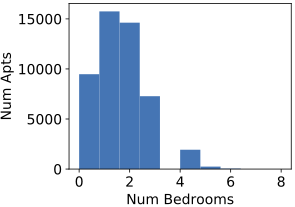
plt.xlabel('Num Bedrooms')
plt.ylabel('Num Apts')
plt.hist(df_num.bedrooms, color=bookcolors['blue'])
plt.show()
You can think of a histogram as an estimate of a feature's distribution (which is, itself, an estimate of the true New York City distribution because we only have a sample of apartments).
Checking for missing values
Another standard check to run is to see whether or not there any missing values in the data set:
df_num.isnull().any()
bathrooms False
bedrooms False
longitude False
latitude False
price False
dtype: bool
Function isnull() applied to a data frame returns true or false for every element in every row; here's how to look at the first five rows:
df_num.isnull().head(5)
Then the any() function returns true for every column that has at least one true value. Fortunately, in this case, there are no missing values. We won't be so lucky in [missing].
Excising the anomalies
Records with erroneous or extreme values confuse humans and machine learning models alike. For example, the apartment costing over $4 million has two bedrooms and one bathroom, which clearly gives a price that is inconsistent with the majority of apartments having those characteristics. We can either leave such records as-is, delete, or “fix” the records but you should err on the side of leaving records as-is. Which alternative we choose depends on knowledge about this domain, the goals of the model, how numerous the anomalies are, and even what we see in the individual records with anomalous values. (Missing data adds another wrinkle.)
There is no substitute for domain knowledge when building a model.
The most important filter to apply relates to the goals of our model, in this case, reasonably-priced apartments just in New York City. We can delete with confidence any records outside of these bounds. Pandas has excellent facilities to select subsets of the records. For example, df_num.price>1_000 gives a column of true and false values computed by looking at each value in the price column. We can then use that column of Boolean values as an index into the data frame, which selects only those rows associated with true values. So, df_num[df_num.price>1_000] returns a subset of the records in df_num whose price is greater than a $1,000. We can also do both comparisons at once and reassign the data frame back to variable df_num:
# filter all records (training/testing)
df_clean = df_num[(df_num.price>1_000) & (df_num.price<10_000)]
Selecting a subset of rows is an example of a Pandas “view,” which returns a filtered perspective on the original data, rather than making a copy. To visualize the distribution of prices, let's use a histogram again:
» Graph generated by code to left
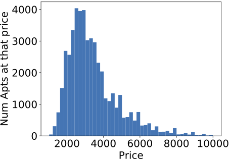
plt.xlabel('Price')
plt.ylabel('Num Apts at that price')
plt.hist(df_clean.price, bins=45, color=bookcolors['blue'])
plt.show()
It's always best to use domain knowledge when identifying outliers, but if we are uncertain about an appropriate range, we can always clip out the bottom and top 1% using a bit of NumPy code. The distribution of the middle 98% of the prices looks pretty similar:
» Graph generated by code to left
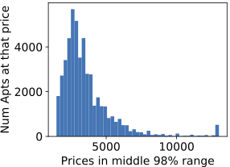
import numpy as np
# find middle 98% of original prices
upper, lower = np.percentile(df.price, [1,99])
clipped = np.clip(df.price, upper, lower)
plt.xlabel('Prices in middle 98% range')
plt.ylabel('Num Apts at that price')
plt.hist(clipped, bins=45, color=bookcolors['blue'])
plt.show()
It looks like we have the prices under control now, so let's turn to deleting records outside of New York City proper. We saw previously that there are records with longitude and latitude values of zero. These likely represent missing values and missing values should normally be handled using techniques from [missing]. In this case, however, we find that there are only a few of such records:
df_missing = df_clean[(df_clean.longitude==0) | (df_clean.latitude==0)]
len(df_missing)
11
We can delete those 11 records without significantly affecting the training set:
df_clean = df_clean[(df_clean.longitude!=0) | (df_clean.latitude!=0)]
New York City does not fit neatly in a square, but we can still decide on a bounding box around it and then delete records outside of that box. A quick check at gps-coordinates.org, gives a rough outline for New York City of latitude, longitude 40.55, -74.1 on the lower left and 40.94, -73.67 on the upper right. We can filter df_clean for this bounding box using another index containing a conditional:
df_clean = df_clean[(df_clean['latitude']>40.55) & (df_clean['latitude']<40.94) &
(df_clean['longitude']>-74.1) & (df_clean['longitude']<-73.67)]
Stripping these records is “legal” because they don't fit within the goal established previously for the model.
The next step could be to examine the few records with extreme numbers of bedrooms or bathrooms, but there are so few, it's unlikely they would skew the data set. This is particularly true after we've removed price outliers, so let's leave those records as-is.
At this point, we've cleaned up the data set so that it falls within the focus of our model, reasonably-price departments in New York City. We've achieved the same data set as file rent-idea.csv used in Chapter 2 A First Taste of Machine Learning. Because we've been filtering the entire numeric data set in df_clean, we must split out our training and test sets again:
df_train, df_test = train_test_split(df_clean, test_size=0.15) # split clean df
We're ready to train a model on this denoised data set to see if the accuracy has improved and if the variability of the validation error has dampened.
Retraining the model
Let's go through the procedure again of splitting out feature vectors and target column from the new df_train set:
X_train = df_train[['bedrooms','bathrooms','latitude','longitude']]
y_train = df_train['price']
Now, let's run 5-fold cross validation to see how the individual chunk errors bounce around:
k=5
cvscore = cross_val_score(
RandomForestRegressor(n_estimators=100, n_jobs=-1), # which model to use
X_train, y_train, # what training data
cv=k, # number of folds, k
scoring='neg_mean_absolute_error') # what error metric
chunks_valid = -cvscore # reverse neg of neg_mean_absolute_error
errors = list(chunks_valid.astype('int'))
avg_err_valid_denoised = chunks_valid.mean()
std_err_valid_denoised = chunks_valid.std()
print(f"{errors} avg {avg_err_valid_denoised:.2f} +/- {std_err_valid_denoised:.2f}")
[300, 305, 299, 308, 301] avg 303.13 +/- 3.62
Great! The average error is almost half what it was, the variation is much tighter between runs, and the chunk error standard deviation is small. Compare those values to the average error of 563 and standard deviation of 214 on the noisy data set.
Now that we've learned how to clean up data and to get stable prediction error estimates using cross validation, let's think about speeding up our training and testing process. You might've noticed the CPU fan on your computer spinning its little heart out running the cross validation tests. The cross validation error is an excellent measure of generality but, depending on the number of folds, k, testing can be very expensive computationally; we have to train the model k times. RFs have a trick that gives us the same validation mechanism without having to retrain the model.
Out-of-bag prediction scores
Another reason to favor RFs, is that they can efficiently compute an estimate of the prediction error while training the model, completely avoiding the need for cross validation. The error metric is called the “out-of-bag score.” (Bag is an abbreviation of bootstrap aggregation, which we'll look at in detail in [RF].) Recall that RFs are a collection of decision trees, each of which is trained on a subset of the training data. The out-of-bag (OOB) score looks at the prediction accuracy for a particular record using only those trees that did not train on that record. Statisticians have shown that the out-of-bag score gives an excellent estimate of a model's generality, its test set prediction error.
The actual out-of-bag score computation can differ depending on the RF implementation, but SciKit's implementation uses a common error metric called  (literally pronounced “R squared”). Think about the score as measuring how well our model performs compared to a trivial model that always returns the average of the target (apartment price) for any requested prediction. A perfect validation score is 1.0, meaning that the model should generalize perfectly. Any value less than that, all away down to negative infinity, indicates the model performs imperfectly to some degree. A score of 0 means the model performs as well as always returning the average price. Because our model can be arbitrarily bad, the score can be arbitrarily negative. A nice feature of the score is that it is normalized: scores are always in the range of 1.0 down to negative infinity, rather than in units of apartment rent price or average rainfall in Nairobi.
(literally pronounced “R squared”). Think about the score as measuring how well our model performs compared to a trivial model that always returns the average of the target (apartment price) for any requested prediction. A perfect validation score is 1.0, meaning that the model should generalize perfectly. Any value less than that, all away down to negative infinity, indicates the model performs imperfectly to some degree. A score of 0 means the model performs as well as always returning the average price. Because our model can be arbitrarily bad, the score can be arbitrarily negative. A nice feature of the score is that it is normalized: scores are always in the range of 1.0 down to negative infinity, rather than in units of apartment rent price or average rainfall in Nairobi.
While much cheaper than cross validation, the out-of-bag score is still not free computationally and we have to ask for the computation with an argument, oob_score=True, to the constructor of the RF. To further reduce the time to train a model, we can also tell the model to use all available processor cores with option n_jobs=-1. To get a better estimate of the out-of-bag score, we should also increases the number of decision trees to 100 from the default of 10. (The number of decision trees is the model's hyper-parameter.) Because of the randomness inherent in selecting random subsets to train individual trees, the score will fluctuate from training run to run, even holding the training set constant. For example, here's how to fit a model three times to our training data and print out the out-of-bag scores:
for i in range(3):
rf = RandomForestRegressor(n_estimators=100, n_jobs=-1, oob_score=True)
rf.fit(X_train, y_train)
print(rf.oob_score_)
0.861620033880882
0.8615205589573746
0.8614187946793377
We've removed outliers and so even splitting out different training sets does not cause the OOB score to fluctuate wildly:
for i in range(3):
df_train_noisy, _ = train_test_split(df_clean, test_size=0.15)
X_train = df_train[['bedrooms','bathrooms','latitude','longitude']]
y_train = df_train['price']
rf = RandomForestRegressor(n_estimators=100, n_jobs=-1, oob_score=True)
rf.fit(X_train, y_train)
print(rf.oob_score_)
0.861166575577798
0.8607685894699812
0.8615909471043297
(Normally, we grab one test set and squirrel it away rather than testing multiple test sets ala cross validation; we're breaking the rules here to make a point about the stability of scores in the face of changing train/test set splits.)
Those scores are pretty good, meaning that we'll likely have a good test score when we're done. Let's compare those scores to the scores computed from various training sets extracted from the original, noisy data:
for i in range(3):
# split original df not df_num
df_train_noisy, _ = train_test_split(df, test_size=0.15)
X_train_noisy = df_train_noisy[['bedrooms','bathrooms','latitude','longitude']]
y_train_noisy = df_train_noisy['price']
rf = RandomForestRegressor(n_estimators=100, n_jobs=-1, oob_score=True)
rf.fit(X_train_noisy, y_train_noisy)
print(rf.oob_score_)
-0.229315342456492
-0.13389092655011048
-0.07238343792420365
Those scores are not at all good and they vary much more on these noisy training sets than on the clean data set. This highlights the importance of the cleanliness of the data because the error estimate fluctuates with the noisy data set, despite us using the exact same RF model with the exact same hyper-parameter. We should not place great confidence in a model whose prediction errors fluctuate so much.
Random forest prediction confidence
We've been looking at aggregate validation errors that average the predicted versus actual price difference across all records in an entire chunk. Sometimes it's useful to consider how confident the model is in the prediction for a specific feature vector. RFs make predictions using an ensemble of decision trees by averaging the predictions of the different trees for a specific feature vector. The standard deviation of the collection of individual tree predictions gives us an idea of the models confidence. We should be more cautious of those model predictions averaged from widely-varying tree predictions. While not an absolute measure of confidence, the standard deviation does give us a relative measure of confidence, letting us rank predictions by how consistent the ensemble trees are.
To access the individual trees in the forest, we use field estimators_ and it also has a predict() method, which we can pass a single feature vector via [X_test.iloc[i]]. (predict() requires a list of feature vectors and so that expression wraps the single vector in a list.) Here's some sample code that computes the standard deviation of the individual tree predictions for the first 10 records of the test set:
import numpy as np
X_test, y_test = df_test[['bedrooms','bathrooms','latitude','longitude']], df_test['price']
rf = RandomForestRegressor(n_estimators=100, n_jobs=-1)
rf.fit(X_train, y_train)
for i in range(10):
preds = [t.predict([X_test.iloc[i]]) for t in rf.estimators_]
a = np.mean(preds)
s = np.std(preds)
y = y_test.iloc[i]
print(f"Apt {i}: true price ${y:5.0f}, predict ${a:5.0f} +/-${s:4.0f}")
Apt 0: true price $ 3295, predict $ 3520 +/-$ 94
Apt 1: true price $ 2395, predict $ 2329 +/-$ 67
Apt 2: true price $ 3250, predict $ 3249 +/-$ 7
Apt 3: true price $ 1950, predict $ 3019 +/-$ 308
Apt 4: true price $ 3200, predict $ 2778 +/-$ 104
Apt 5: true price $ 2250, predict $ 2324 +/-$ 129
Apt 6: true price $ 5695, predict $ 6100 +/-$ 191
Apt 7: true price $ 3100, predict $ 3349 +/-$ 331
Apt 8: true price $ 2699, predict $ 2786 +/-$ 375
Apt 9: true price $ 7195, predict $ 6435 +/-$1177
We should be more cautious of predictions for feature vectors with higher standard deviations.
We've now got a prediction model that gets a decent and stable prediction error. Are we done yet? That depends on the definition of “good enough” and whether we think we can do better. Imagine a website that used our model to predictor rent prices using apartment features entered by a user. There is likely a threshold below which users don't find the predictions useful. If we have a suitable way to test “good enough,” this should guide whether we keep looking for improvements.
Don't try too many models because it's a form of overfitting a model. Eventually, you'll find a model that spuriously finds a relationship.
Let's assume that we'd like to improve the model's accuracy. We can try different models, but it's unlikely they would perform significantly better and many would perform worse. For example, a linear prediction model called Lasso Regression is often a good baseline and here's a snippet to train the model and print the scores for the training and test sets:
from sklearn.linear_model import Lasso
X_test, y_test = df_test[['bedrooms','bathrooms','latitude','longitude']], df_test['price']
lm = Lasso(alpha=0.5) # create linear model
lm.fit(X_train, y_train)
print("training score", lm.score(X_train, y_train))
training score 0.5785023145351245
Even the linear model's training is significantly worse than the .86 we get with the RF. It's unable to capture the relationship between features and apartment price even for training data.
The gradient boosting model is another popular and powerful model based upon decision trees, but it also fails to capture the relationship as well as an RF:
from sklearn.ensemble import GradientBoostingRegressor
gbr = GradientBoostingRegressor(n_estimators = 500)
gbr.fit(X_train, y_train)
print("training score", gbr.score(X_train, y_train))
training score 0.7817488655555103
Normally, a grid search over the hyper parameters is required to tune the model and get the best accuracy, but out-of-the-box gradient boosting does not perform as well as an RF for this data set.
As we've discussed, it's more about the data than the model so let's take another look at the data to see if we've left some meat on the bone.
Synthesizing new features
We've just filtered records in our data set to achieve better accuracy, but we can also inject new features or even delete features from consideration. All such data set manipulations fall under the term feature engineering and practitioners rely on it heavily to achieve good results. (We'll do lots more in [feateng].) One of the most productive ways to improve model accuracy is to inject new synthesized attributes derived from existing features or from external data sources.
For example, adding a feature that measured distance from the nearest subway station might improve performance. We have location information, but nothing about what's at that location, and proximity to a subway is important to New Yorkers. We also understand that having a doorman is important to many people, so it would be great to add a feature that indicated whether the building has a doorman. (Again, domain knowledge is important here.) It turns out that the original data set has a features attribute (of type string) with a list of features about the apartment, and the features list includes “doorman” for some records. Here are the first five values from the features column:
df.features.head(5)
0 []
1 ['Doorman', 'Elevator', 'Fitness Center', 'Cat...
2 ['Laundry In Building', 'Dishwasher', 'Hardwoo...
3 ['Hardwood Floors', 'No Fee']
4 ['Pre-War']
Name: features, dtype: object
Before synthesizing and injecting new features, let's get a stable baseline OOB score and take a look at the importance of our existing features:
def stable_oob_score(X_train, y_train, trials = 7):
scores = []
rf = RandomForestRegressor(n_estimators=100, n_jobs=-1, oob_score=True)
for i in range(trials):
rf.fit(X_train, y_train)
scores.append(rf.oob_score_)
return np.mean(scores), np.std(scores)
m, s = stable_oob_score(X_train, y_train)
print(f"OOB score {m:.5f} +/-{s:.5f}")
OOB score 0.86142 +/-0.00025
» Graph generated by code to left
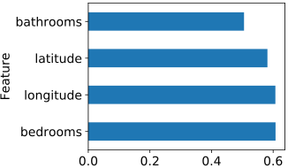
from rfpimp import *
I = oob_importances(rf, X_train, y_train)
I.plot(kind='barh', legend=False)
plt.show()
13One way to compute feature importance is to get a baseline performance score then drop a column entirely, retrain the model, and recompute the performance score. The importance value of a feature is the difference between the baseline and the score from the model missing that feature. See [importances].
We can have confidence in these feature importances13 because the model is stable and accurate; if a model is no good, feature importances are suspect.
Let's create three new boolean columns that indicate whether the apartment has a doorman, parking, or laundry. To do this, we have to backtrack a little bit because we haven't carried the features column forward as we cleaned up df_num. The following code makes a copy of the numeric columns plus the features column from the original data set and then filters it in the same way we did to get df_clean above:
df_aug = df[['bedrooms','bathrooms','latitude','longitude',
'features','price']].copy()
df_aug = df_aug[(df_aug.price>1_000) & (df_aug.price<10_000)]
df_aug = df_aug[(df_aug.longitude!=0) | (df_aug.latitude!=0)]
df_aug = df_aug[(df_aug['latitude']>40.55) & (df_aug['latitude']<40.94) &
(df_aug['longitude']>-74.1) & (df_aug['longitude']<-73.67)]
Then we normalize the features column so that missing features values become blanks and we lowercase all of the strings so that we can test for “Doorman” and “doorman” simultaneously:
# rewrite features column
df_aug['features'] = df_aug['features'].fillna('') # fill missing w/blanks
df_aug['features'] = df_aug['features'].str.lower() # normalize to lower case
14You might run into an error “A value is trying to be set on a copy of a slice from a DataFrame” when creating new columns. The error indicates that you are trying to create a new column in a view of a data frame rather than a data frame. Here is a snippet that exhibits the error.
p = df[['price']]
p['discount'] = p.price * 0.10
To avoid this, use
p = df[['price']].copy()
(possibly with deep=False argument).
Next, we create the three boolean columns by checking for the presence or absence of a string in the features column. Creating a new column is easy with Pandas data frames; just use df_aug[name] on the left side of an assignment; notation df_aug.name only works in expressions, not on the left side of an assignment.14 By accessing the str field of column df_aug['features'], we get access to a number of useful string utilities, such as the contains() function:
df_aug['doorman'] = df_aug['features'].str.contains("doorman")
df_aug['parking'] = df_aug['features'].str.contains("parking|garage")
df_aug['laundry'] = df_aug['features'].str.contains("laundry")
del df_aug['features'] # don't need this anymore
df_aug.head(3)
Next, let's split the data into train and test sets then look at the OOB score:
df_train_aug, df_test_aug = train_test_split(df_aug, test_size=0.15) # split df_aug
X_train, y_train = df_train_aug.drop('price', axis=1), df_train_aug['price']
X_test, y_test = df_test_aug.drop('price', axis=1), df_test_aug['price']
m, s = stable_oob_score(X_train, y_train)
print(f"OOB score {m:.5f} +/-{s:.5f}")
OOB score 0.86322 +/-0.00032
(The axis=1 argument to drop() indicates that price refers to a column not a row; indicate rows by axis=0.)
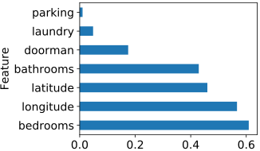
Figure 8. Boolean feature importance
The OOB for a model with these features usually slightly higher (though we've seen it slightly lower, depending on how the train/test set split was drawn). Let's look at the importances graph in Figure 8 to see if any synthetic feature stands out. It looks like there is some predictive value in the doorman feature, but the laundry and parking features seem relatively unimportant compared to our original numeric columns. That could be useful information to real estate agents. It says that laundry and parking might sound great, but people aren't willing to pay for them. On the other hand, people seem willing to pay a bit for a doorman.
Let's try dropping the low-importance parking feature to see its effect on accuracy:
m, s = stable_oob_score(X_train.drop('parking', axis=1), y_train)
print(f"OOB score {m:.5f} +/-{s:.5f}")
OOB score 0.86203 +/-0.00015
Dropping the parking feature reduces , so let's keep it. In practice, however, there are business reasons why we might want to drop that feature, regardless of its small bump in accuracy. Each new column requires storage, training time, and prediction time. It's also another feature to explain to management or users. When there are 50 or 100 features instead of a 5 or 6, reducing the number of columns would also help us interpret the model.
Let's see what we can do with the numeric features. For some models, it's useful to synthesize a new column from the multiplication or division of other columns. For example, we can imagine that the ratio of bedrooms to bathrooms is useful because it's captures how much contention there might be for, say, the shower in the morning:
X_train["beds_to_baths"] = X_train["bedrooms"]/(X_train["bathrooms"]+1)
# keep X_test in sync
X_test["beds_to_baths"] = X_test["bedrooms"]/(X_test["bathrooms"]+1)
m, s = stable_oob_score(X_train, y_train)
print(f"OOB score {m:.5f} +/-{s:.5f}")
OOB score 0.86366 +/-0.00029
Notice the trick of dividing by the number of bathrooms plus 1 because through error, or strange New York City apartments, some records show no bathrooms. This avoids a division by zero and doesn't affect the predictive nature of the feature because it is uniformly scaling the feature values.
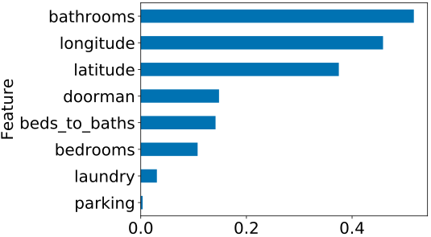
Figure 9. Synthesized feature importance
It doesn't look like that synthesized numeric feature affects the in any significant way. The feature important graph in Figure 9 shows that beds_to_baths has some decent importance, which is odd because the feature did not improve accuracy. This counterintuitive result is expected but, to explain, requires a bit more of an understanding of RF construction than we have at the moment. Just keep in mind that RFs are able to simulate arithmetic between multiple columns, such as we manually computed for beds_to_baths. If such interactions are important, tree construction has to work harder and the resulting trees are bigger, but RFs can often do implicit arithmetic-based feature synthesis for us.
The importance graph also seems to show that feature beds_to_baths pulls down the importance of the bedrooms feature. We'll learn a lot more about this in [importances], but those two columns affect each other's importance because they are collinear (correlated in some way but not necessarily with a strictly linear relationship). Because of the way RFs are constructed, strongly correlated features share importance roughly per the strength of the correlation. From just its effect on the importance of bedrooms, we would conclude that beds_to_baths is correlated in some way with bedrooms. This also helps explain why adding beds_to_baths did not affect accuracy: the RF model already had the information it needed to make accurate predictions. Let's drop that feature:
X_train = X_train.drop('beds_to_baths', axis=1)
X_test = X_test.drop('beds_to_baths', axis=1)
If adding a feature does not improve accuracy and pulls down the importance of another feature, the new and existing feature are collinear to some degree.
Let's compare the effect of adding the boolean features extracted from the apartment features column to adding the collinear numerical feature beds_to_baths. RFs can't dig into text strings automatically to pull out relevant features; that requires domain knowledge. That explains why those features had the potential to improve accuracy because the model couldn't implicitly compute the features for itself. That also explains why adding those columns did not drop the importance of any previous columns. The new features are not collinear with any previous features.
Unless we're willing to find and merge in external data sources, such as proximity to subway stations, we've reached the end of the road in terms of training our model. We've got a clean training set and a good set of features that yields a pretty good out-of-bag score. It's time to run the test set through the model.
Checking model generality with the test set
The out-of-bag score provided by RFs is an excellent estimate of the prediction error, but the true test of generality is running the test set through the model. It's crucial that we never peek at the test set, nor run it through the model during development. We only compute the test score when we have a model that we consider done. Let's start with a freshly trained RF using the training set augmented with synthesized features to get an and measure the accuracy using cross validation:
rf = RandomForestRegressor(n_estimators=100, n_jobs=-1, oob_score=True)
rf.fit(X_train, y_train)
print(f"OOB R^2 {rf.oob_score_:.5f}")
cvscore = cross_val_score(
RandomForestRegressor(n_estimators=100, n_jobs=-1), # which model to use
X_train, y_train, # what training data to split up
cv=5, # number of folds/chunks
scoring='neg_mean_absolute_error') # what error metric
chunks_valid = -cvscore
err_cv = chunks_valid.mean()
print(f"${err_cv:.2f} average cross-validation error")
OOB R^2 0.86278
$301.50 average cross-validation error
Now, let's compare those with the and accuracy computed using the test set:
print(f"Test R^2 {rf.score(X_test, y_test):.5f}")
err_test = mean_absolute_error(y_test, rf.predict(X_test))
print(f"${err_test:.2f} average error on test set")
Test R^2 0.87148
$285.88 average error on test set
The good news is that the out-of-bag closely matches the test set score and the average prediction error on the test set is just $285, close to the cross validation error of $301. We can conclude that our model is likely to generalize well to previously-unseen apartment feature vectors.
Before finishing up, let's see how a model trained on the original, noisy data set would perform on a test set. We need to run a number of trials because the data is peppered with outliers and, therefore, test prediction error will fluctuate greatly, depending on how the test set is (randomly) extracted:
errors = []
for trial in range(5):
# split original df not filtered data frame
df_train_noisy, df_test_noisy = train_test_split(df, test_size=0.15)
X_train = df_train_noisy[['bedrooms','bathrooms','latitude','longitude']]
y_train = df_train_noisy['price']
X_test = df_test_noisy[['bedrooms','bathrooms','latitude','longitude']]
y_test = df_test_noisy['price']
rf = RandomForestRegressor(n_estimators=100, n_jobs=-1)
rf.fit(X_train, y_train)
err_test = mean_absolute_error(y_test, rf.predict(X_test))
errors.append(err_test)
print(f"${err_test:.2f} average error on test set, test R^2 is {rf.score(X_test, y_test):.4f}")
avg_test_error = int(np.mean(errors))
print(f"Average of average errors is ${avg_test_error}")
$522.48 average error on test set, test R^2 is 0.0284
$511.85 average error on test set, test R^2 is 0.0211
$436.65 average error on test set, test R^2 is -0.1759
$364.85 average error on test set, test R^2 is 0.7710
$567.57 average error on test set, test R^2 is -59.8766
Average of average errors is $480
The prediction error is very often much worse for this noisy model and the $480 average prediction error is significantly larger. The point here is that a noisy data set leads to unstable prediction errors and an unstable model. Cleaning up the data set not only makes the model more accurate but also more reliable (stable).
Interpreting training, validation, and testing errors
A comparison of the various prediction error estimates, such as average cross-validation error or , provides an indication of model fitness. Ideally, our model would show a low training, validation, and testing error (high accuracy or high score), but we're happy with consistent validation and testing errors. Any other situation suggests a bug in the code or an important difference in the nature of the sets. The following table compares extremes of training and validation errors, indicating the likely fitness of the model.
| | Low validation error | High validation error |
| Low training error | Good fit | Overfit |
| High training error | Bug? | Underfit |
In isolation, a low training error doesn't tell us that much. That just means that there is a relationship between features and target and the model captures it. If, however, we can't get a low training error, it's an indication that there is no relationship or the model is simply unable to capture it.
Comparing the training error to the validation error is where we learn the most about the model. When both training and validation errors are low, we are capturing the relationship in the training data well and we have evidence that the model is not overfit. The best models overfit a bit, though, so we expect the validation error to be higher than the training error.
Be on the lookout for perfect training scores as it could be an indication of a bug; real data is usually too noisy to get a perfect model. Also be suspicious of overly-good validation scores, which could indicate data leakage. Data leakage means that the model has an unfair advantage over the eventual production environment. For example, a bug could leave the target variable as a feature during training, which would let the model map feature y to itself, target y. Another possible sign of data leakage is a feature identified by the model as very important, but which the domain expert says is not important. We'll look at this more in [leakage].
If the training error is low and the validation error is high, that means that the model is too specific to the training data and is overfit. If both errors are high, the model does not fit the data very well. It makes no sense that, for the final case, the training error would be high but the validation error would be low. It could happen by chance, but it's more likely an indication that there is a bug in the code.
The testing error gives us the best measure of generality and the most accurate estimate of the prediction error. We'd like to see the testing error consistent with, or slightly worse, than the validation error. Because we tuned the model using the validation set and the model has never seen the test set, we would expect the validation error to underestimate the testing error. Here are the possible situations arising from different error rates:
| | Low validation error | High validation error |
| Low testing error | Victory! | Possible, but look for bug |
| High testing error | Validation, test sets differ | Sad, but consistent |
We can declare victory if the model gives a low testing error and the metric is consistent with the validation error. Consistently high validation and testing errors is sad but no cause for alarm. We expected our model to generalize poorly and it does. Trouble lurks when the validation and testing errors differ considerably. When the validation error is low and the testing error is unexpectedly high, our first reaction should be that the validation and testing sets are different in an important way; we'll see how to address that issue in [testing]. If the validation error is high but the testing error is low, we either got lucky or there's a bug in the code.
A Recipe for Training a Machine Learning Model
Congratulations, you've just solved your first real machine learning problem! There's a lot packed into this chapter, but it's a complete walk-through from setting up the Jupyter development environment to testing a model for generality on a test set. We learned how to examine and denoise a data set to improve model accuracy then to inject synthesized attributes. Along the way, we learned lots of useful Pandas data frame manipulation commands. We also now have a good understanding of the difference between data subsets used for training, validation, and testing.
We learned how to interpret feature importance graphs, both in terms of selecting model features for accuracy reasons but also interpreting the model to understand the market. For example, there's no surprise that the number of bedrooms and location are the most important predictors of price, but the number of bathrooms also matters. Renters are also willing to pay a little bit for a doorman and laundry, but not so much for parking.
This chapter also highlighted a number of important reasons why RFs are a good default model choice. We don't have to scale or normalize data values and RFs implicitly synthesize features that are arithmetic combinations of existing numerical features (such as beds_to_bath). RFs deal well with outliers in the predictor variables and ignore superfluous non-predictive features automatically. The OOB score computed automatically by an RF is much cheaper to compute than cross validation but still gives a good estimate of the test set score.
Intertwined throughout this chapter is a basic process or recipe we can follow for training a model, so let's summarize it here for future use:
- Clearly identify the problem you're trying to solve, including the intended prediction variable. Define a metric of model performance, such as mean absolute value as we've used here. Try to define what acceptable model performance means so that you have some idea when the model is good enough. Articulate any bounds or constraints on the input data (e.g., “reasonably-priced apartments directly within New York City”).
- Figure out if you have the necessary data and, if not, where you can get it. E.g., a client once wanted a model to predict which website subscribers would purchase an item but they provided a data set containing only information on those users that had purchased items; a model needs data on purchasers and non-purchasers to distinguish between them.
- Take a quick sniff of the data to determine the feature names, datatypes, and nature of the target variable. The target variable column should hold a numeric values for regression (e.g., predicting rent prices) and a discrete or categorical values for classification (stop sign, yield sign, no-U-turn sign). Drop columns associated with non-numeric features because we don't know how to deal with them yet. There is no need to scale or otherwise normalize feature values for an RF model, as a general rule.
- Extract a randomly-selected test set and hide it away until final generality testing.
- Train an initial RF model and compute the training and cross-validation errors, to get a feel for the difficulty of the problem. Train and validate the model multiple times to see if the validation error (or score) is stable. If not, it could indicate high variability in the data, including outliers ($4M/month apartment), errors (apartments located in Boston), or inconsistent data (wildly different prices for apartments with identical features). If the training error is high, it suggests there is either no relationship to capture or the model is too weak; jump to step 8. If the training error is low, but validation error is high, continue to step 6. If you get lucky and you have a stable, low validation error, jump to step 9.
- Perform the minimum exploratory data analysis necessary to filter the data set to contain records consistent with the goals of your model (e.g., no apartments from Boston and nothing too expensive). Extract, and set aside, from this filtered data a new test set.
- Train a model based upon this cleaned data, rechecking validation error. If the validation error is “good enough” per your original acceptance measure set out in step 1, jump to step 9.
- Synthesize features, either deriving them from existing columns (has doorman) or introducing data from external sources (proximity to subway station). Extra features are unlikely to confuse an RF, even if the features are nonpredictive or highly-correlated with existing features. Go back to step 7.
- Test the model using the testing set you put aside earlier. If the prediction error satisfies your original acceptance measure, you're done! If the prediction error is noticeably worse than the validation error and you selected the test set, it's possible the test was not selected properly. If you were given the test set, it's possible that the nature of the test and training data are different; e.g., customer behavior has shifted over time.
As you can see from this recipe, developing an accurate machine learning model is a highly iterative process and it's hard to know when you're done. That's why it's important to start out by defining an accuracy metric and what it means to be “good enough.”
Now that we've built a regressor for predicting numeric values, we're going to turn our attention to predicting discrete categories in the next chapter. We'll reuse the same data set because it's familiar, but we'll target a new target column that describes user interest (low, medium, high) on apartment webpages.